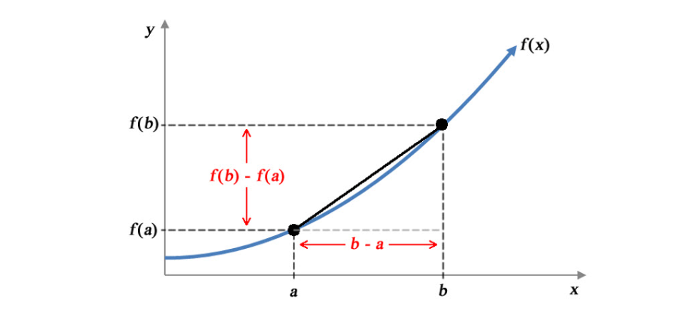

4 Differentiation
Aims
- introduce the concept of differentiation and rules of differentiation
Learning outcomes
- to be able to explain differentiation in terms of rate of change
- to be able to find derivatives in simple cases
4.1 Rate of change
- We are often interested in the rate at which some variable is changing, e.g. we may be interested in the rate at which the temperature is changing or the rate of water levels increasing
- Rapid or unusual changes may indicate that we are dealing with unusual situations, e.g. global warming or a flood
- Rates of change can be positive, negative or zero corresponding to a variable increasing, decreasing and non-changing
The function \(f(x) = x^4 - 4x^3 - x^2 - e^{-x}\) changes at different rates for different values of \(x\), e.g.
- between \(x \in (-10, -9)\) the \(f(x)\) is increasing at slightly higher pace than \(x \in (5,6)\)
- between \(x \in (-7, -5)\) the \(f(x)\) is decreasing and
- between \(x \in (0, 1)\) the \(f(x)\) is not changing
- to be able to talk more precisely about the rate of change than just saying “large and positive” or “small and negative” change we need to quantify the changes, i.e. assign the rate of change an exact value
- Differentiation is a technique for calculating the rate of change of any function
4.2 Average rate of change across an interval

To dive further into calculating the rate of change let’s look at Figure @ref(fig:diff-01) and define the average rate of change of a function across an interval. Figure @ref(fig:diff-01) shows a function \(f(x)\) with two possible argument values \(a\) and \(b\) marked and their corresponding function values \(f(a)\) and \(f(b)\).
Consider that \(x\) is increasing from \(a\) to \(b\). The change in \(x\) is \(b-a\), i.e. as \(x\) increases from \(a\) to \(b\) the function \(f(x)\) increase from \(f(a)\) to \(f(b)\). The change in \(f(x)\) is \(f(b)-f(a)\) and the average rate of change of \(y\) across the \([a,b]\) interval is:
\[\begin{equation} \frac{change\:in\:y}{change\:in\:x}=\frac{f(b)-f(a)}{b-a} (\#eq:diff-point) \end{equation}\]
E.g. let’s take a quadratic function \(f(x)=x^2\) and calculate the average rate of change across the interval \([1, 4]\).
- The change in \(x\) is \(4-1\) and the change in \(f(x)\) is \(f(4) - f(1) = 4^2 -1^2 = 16 - 1 = 15\). So the average rate of change is \(\frac{15}{3}=5\). What does this mean? It means that across the interval \([1,4]\) on average the \(f(x)\) value increases by 5 for every 1 unit increase in \(x\).
- If we were to look at the average rate of change across the interval \([-2, 0]\) we would get \(\frac{f(0)-f(-2)}{0 - (-2)}=\frac{0 - (-2)^2}{2}=\frac{-4}{2} = -2\). Here, over the \([-2, 0]\) on average the \(f(x)\) value decreases by 2 for every 1 unit increase in \(x\).
- Looking at the graph of \(f(x)=x^2\) verifies our calculations
4.3 Rate of change at a point
- We often need to know the rate of change of a function at a point, and not simply an average rate of change across an interval.
- Figure @ref(fig:diff-02), similar to Figure @ref(fig:diff-01), shows, instead of two points \(a\) and \(b\), point \(a\) and a second point defined in terms of its distance from the first point \(a\). Thus, the two points are now \(a\) and \(a + h\) and the distance between the two points is equal to \(h\).
- Now we can write that: \[\frac{change\:in\:y}{change\:in\:x}=\frac{f(a+h)-f(a)}{a+h-a} = \frac{f(a+h)-f(a)}{h}\]

Further:
- if we assume that the second point \(a+h\) is really close to \(a\), meaning that \(h\) approaches 0, denoted as \(h \rightarrow 0\), we can find the rate of change at the point \(a\)
- the distance between the two points \(a\) and \(a+h\) is getting smaller and so is the difference of the function values \(f(a+h) - f(a)\). We denote these small differences as \(\delta x\) and \(\delta y\), pronounced “delta x” and “delta y”, respectively.
- the term \(\delta\) reads as “delta” and represents a small change
We can thus continue and write that a rate of change of a function at a point is given by \[\begin{equation} \frac{small\:change\:in\:y}{small\:change\:in\:x} = \lim_{h\to0}\frac{f(a+h)-f(a)}{h} (\#eq:diff-point-2) \end{equation}\]
E.g. let’s look at the linear function \(f(x) = 2x+3\). We can find the rate of change at any point of \(x\) by: \[\frac{small\:change\:in\:y}{small\:change\:in\:x} = \\\frac{f(x+h)-f(x)}{x+h-x}= \lim_{h\to0}\frac{2(x+h)+3-(2x+3)}{x+h-x}=\lim_{h\to0}\frac{2h}{h}=2\] It means that the function value \(f(x)\) increases by 2 for every small increase, \(h\), in \(x\). Here, this increase is the same for all the values of \(x\), i.e. it does not depend on \(x\). The change in function value \(f(x)\) can depend on the value of \(x\), for instance if we look at the quadratic \(f(x)=x^2\) function, we get: \[\frac{small\:change\:in\:y}{small\:change\:in\:x} = \\ \frac{f(x+h)-f(x)}{x+h-x}=\lim_{h\to0}\frac{x^2+2xh+h^2-x^2}{h}=\lim_{h\to0}\frac{2xh+h^2}{h}=2x+h\]
This means that:
- the rate of change for the function \(f(x)\) at a point \(x\) is \(2x\)
- the \(f(x)\) value increases by \(2x\) for every small increase, \(h\), in \(x\)
- the rate of change along a quadratic function is changing constantly according to the value of \(x\) we are looking at, it is a function of \(x\)
- and finally that the rate of change does not give us any information about the rate of change globally.
4.4 Terminology and notation
- differentiation is the process of finding the rate of change of a given function
- the function is said to be differentiated
- the rate of change of a function is also known as the derivative of the function
- given a function \(f(x)\) we say that we differentiate function in respect to \(x\) and write:
\[\lim_{h\to0}\frac{\delta y}{\delta x}= \frac{dy}{dx}\]
or use the “prime” \[f´(x)\]
4.5 Table of derivatives
- in practice, there is no need to compute \(\displaystyle \lim_{h\to0}\frac{\delta y}{\delta x}\) every time when we want to find a derivative of a function
- instead, we can use patterns of the common functions and their derivatives
| Function \(f(x)\) | Derivative \(f'(x)\) |
|---|---|
| \(k\) | \(0\) |
| \(x\) | \(1\) |
| \(kx\) | \(k\) |
| \(x^n\) | \(nx^{n-1}\) |
| \(kx^n\) | \(knx^{n-1}\) |
| \(e^x\) | \(e^x\) |
| \(e^{kx}\) | \(ke^{kx}\) |
| \(\ln(x)\) | \(\frac{1}{x}\) |
| \(\ln(kx)\) | \(\frac{1}{x}\) |
We can use Table 4.1 to find derivatives of some of the functions e.g.
- \(f(x) = 3x\), \(f'(x) = 3\)
- \(f(x) = 2x^4\), \(f'(x) = 2*4x^{4-1} = 8x^3\)
- \(f(x) = e^{2x}\), \(f'(x) = 2e^{2x}\)
- \(f(x) = \ln(4x)\), \(f'(x) = \frac{1}{x}\)
Exercises
Exercise 4.1 Find derivatives of the functions
- \(f(x) = 2\)
- \(f(x) = 2x + 1\)
- \(f(x) = 5x^2\)
- \(f(x) = 4x^3 + x^2\)
- \(f(x) = \sqrt(x)\)
- \(f(x) = \ln(2x)\)
- \(f(x) = e^{x}\)
- \(f(x) = \frac{9}{x^2} + ln(4x)\)
- \(f(x) = 4x−6x^6\)
- \(f(x) = \frac{3}{x^2}\)
Answers
Solution. Exercise 4.1
- \(f(x) = 2\), \(f'(x) = 0\)
- \(f(x) = 2x + 1\), \(f'(x) = 2\)
- \(f(x) = 5x^2\), \(f'(x)= 10x\)
- \(f(x) = 4x^3 + x^2\), \(f'(x)=12x^2 + 2x\)
- \(f(x) = \sqrt(x) = x^{\frac{1}{2}}\), \(f'(x)=\frac{1}{2}x^{\frac{1}{2}-1} = \frac{1}{2}x^{-\frac{1}{2}}\)
- \(f(x) = \ln(2x)\), \(f'(x) = \frac{1}{x}\)
- \(f(x) = e^{x}\), \(f'(x) = e^x\)
- \(f(x) = \frac{9}{x^2} + ln(4x)\)
- \(f(x) = 4x−6x^6\)
- \(f(x) = \frac{3}{x^2}\)